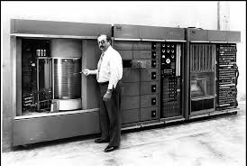
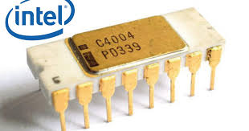
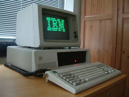

La evolución de los computadores ha sido un proceso fascinante que ha transformado la forma en que vivimos, trabajamos y nos comunicamos. Desde los primeros dispositivos mecánicos hasta los sofisticados sistemas actuales, cada avance ha marcado un hito en la historia de la tecnología.
| Año | Nombre | Historia | Ventajas | Desventajas | Imagen |
|---|---|---|---|---|---|
| 1945 | ENIAC | Desarrollado por John W. Mauchly y J. Presper Eckert, fue uno de los primeros computadores electrónicos de propósito general. | Rápido procesamiento de datos y programación flexible. | Grande, costoso, y consumía mucha energía. | |
| 1956 | IBM 305 RAMAC | Primer computador que utilizó un disco duro magnético, permitiendo almacenar grandes cantidades de datos. | Almacenamiento de datos a gran escala y acceso rápido. | Requiere mantenimiento constante y era costoso. |  |
| 1971 | Intel 4004 | Desarrollado por Intel, fue el primer microprocesador comercialmente disponible, permitiendo la miniaturización de computadores. | Permite el desarrollo de dispositivos más compactos y accesibles. | Limitaciones en procesamiento y memoria en comparación con modelos actuales. |  |
| 1981 | IBM PC | Introdujo la computadora personal en el mercado, estableciendo estándares que todavía se usan hoy en día. | Fácil de usar, accesible para el consumidor promedio. | Inicialmente limitaciones de hardware y software. |  |
| 1991 | World Wide Web | Tim Berners-Lee desarrolló la web, revolucionando el acceso y la distribución de la información. | Facilitó la comunicación y el acceso a información global. | Dependencia de Internet y problemas de seguridad. | |
| 2007 | Smartphones | El lanzamiento del iPhone por Apple popularizó los teléfonos inteligentes, combinando funciones de computadora y teléfono. | Portabilidad y múltiples funciones en un solo dispositivo. | Dependencia de la tecnología y problemas de privacidad. |